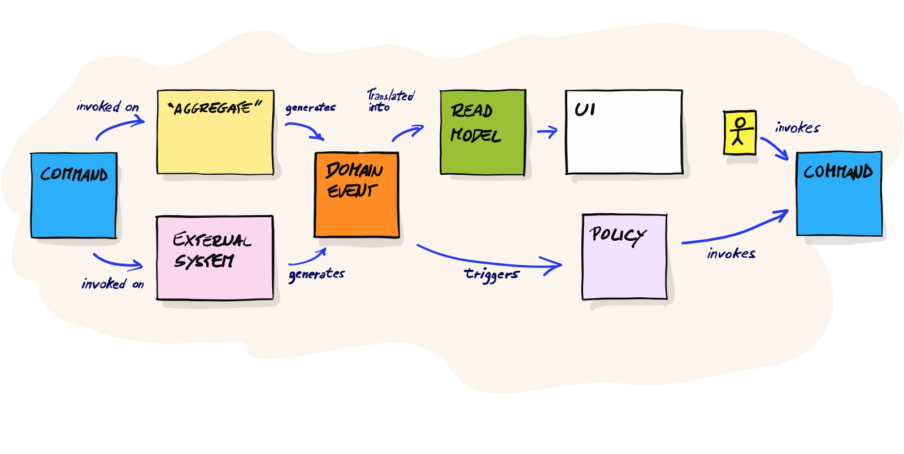

Event Storming#
Event Storming is a workshop-based approach to software modeling and process discovery. It involves gathering stakeholders, developers, and domain experts to collaboratively explore complex business domains and processes through the visualization of domain events.
Key Principles of Event Storming:
- Events as Core Elements: Events represent significant occurrences in the domain that drive business processes.
- Collaborative Discovery: Engaging all relevant stakeholders ensures a shared understanding and uncovers hidden requirements.
- Big Picture and Detail: The approach can be used to map out high-level processes or dive into detailed workflow steps.
Why Event Storming Fits Our Modeling Tool#
-
Alignment with Domain-Driven Design (DDD):
- Event Storming is deeply rooted in DDD principles, emphasizing the importance of understanding domain events and behaviors. Our modeling tool, inspired by DDD, naturally aligns with this approach by focusing on commands, events, and projections.
-
Enhancing Communication:
- By involving domain experts and stakeholders in the modeling process, Event Storming ensures that the resulting models accurately reflect business needs and processes. This collaborative approach reduces misunderstandings and ensures a shared vision.
-
Improving Model Accuracy:
- Visualizing the entire process through events allows for a comprehensive understanding of the domain. This holistic view ensures that our models are not only accurate but also adaptable to changing business requirements.
-
Facilitating Agile Development:
- Event Storming supports iterative and incremental development. The insights gained from these sessions inform our modeling tool, making it easier to adapt and refine models as the project evolves.
The workshop#

-
Events (Orange sticky notes):
- What: Describe the significant occurrences within the system.
- Example: "Order Placed", "Payment Received".
- Role: They identify the key actions happening in the system and form the core of the model.
-
Commands (Blue sticky notes):
- What: Describe the actions taken by a user or system to trigger an event.
- Example: "Place Order", "Cancel Booking".
- Role: They indicate which commands are necessary to trigger events and help define the interactions within the system.
-
Aggregates (Yellow sticky notes):
- What: Represent the collection of data and logic involved in handling events.
- Example: "Order", "Customer".
- Role: They structure the data and ensure that events are handled correctly.
-
Read Models/Views (Green sticky notes):
- What: Describe how data is presented to the user.
- Example: "Order History", "Product Catalog".
- Role: They show the system's output and help understand how data is displayed.
-
Policies (Purple sticky notes):
- What: Describe rules or processes that respond to events and may trigger other commands.
- Example: "When Order Placed, Send Confirmation Email".
- Role: They define the business logic and automated reactions within the system.
-
External Systems (Red sticky notes):
- What: Represent systems outside your own system that you integrate with.
- Example: "Payment Gateway", "Customer Support System".
- Role: They help identify dependencies and integrations with external systems.
-
Issues (Pink sticky notes):
- What: Describe problems or questions that arise during the modeling process.
- Example: "How to handle failed payments?", "What happens if a customer cancels?".
- Role: They ensure that open issues are noted and addressed later.
How to Use These Sticky Notes in Event Storming:
-
Identify Events: Start by writing down all the key events (orange sticky notes) that occur in your system and place them in chronological order on a large surface like a wall or whiteboard.
-
Add Commands: Identify the actions (blue sticky notes) that trigger these events and place them before the corresponding events.
-
Define Aggregates: Add yellow sticky notes to show which entities are involved in the events and commands.
-
Design Read Models/Views: Use green sticky notes to illustrate how data is presented to users.
-
Describe Policies: Add purple sticky notes to capture business rules and automated responses.
-
Identify External Systems: Use red sticky notes for systems you integrate with.
-
Mark Issues: Use pink sticky notes for questions or problems that need to be addressed.
By using this method, you create a visual and structured overview of your system, which helps in understanding and communicating the complexity and interactions within it.
Mapping to Tracepaper concepts#
| Event Storming Sticky Note | Description | Tracepaper Concept | Description |
|---|---|---|---|
| Domain Events | Significant occurrences in the domain | Events | Represent occurrences that trigger changes |
| Commands | Actions that trigger domain events | Commands | Requests for a state change or operation |
| Aggregates | Entities that encapsulate business rules | Aggregates, Behavior Flows | Clustered entities with transactional consistency |
| Policies | Rules or business logic | Automations, Python Modules | (Reactive) behavior |
| Read Models | Projections of the current state | Materialized Views, Projections | Optimized data structures for queries |
| Actors | People or systems interacting with the domain | N/A | N/A |
| External Systems | Systems outside the domain boundary | Automations | Connections to external systems and services |
| Bounded Contexts | Logical boundaries within the domain | Subdomains | Bundle related aggregates |
Conclusion#
Event Storming is a powerful technique for discovering and modeling complex business processes. Its alignment with Domain-Driven Design and collaborative nature make it an ideal fit for our modeling tool, ensuring accurate, flexible, and shared understanding of domain models. This approach enhances our ability to deliver robust, business-aligned software solutions.
For more detailed information, you can refer to this Event Storming guide which provides a comprehensive overview of the methodology.